Introducción a la Inteligencia Artificial
¿Qué significa ser inteligente?
Un sistema artificial que realiza comportamientos que consideraríamos inteligentes si los realizara una persona.
La IA no es magia.
En video juegos, la IA puede ser un conjunto de reglas que determinan el comportamiento de los enemigos.
En un sistema de recomendación, la IA puede ser un modelo que predice qué productos te interesan.
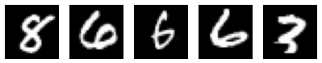
Discutamos.
El sistema aprende el comportamiento
Obtenemos muchos ejemplos de un problema y el sistema encuentra patrones en los datos para poder resolverlo.
Así como un carro modelo es una versión pequeña de un vehículo real,
un modelo de ML es una versión simplificada de un sistema, que permite simular su comportamiento y hacer predicciones sobre él.
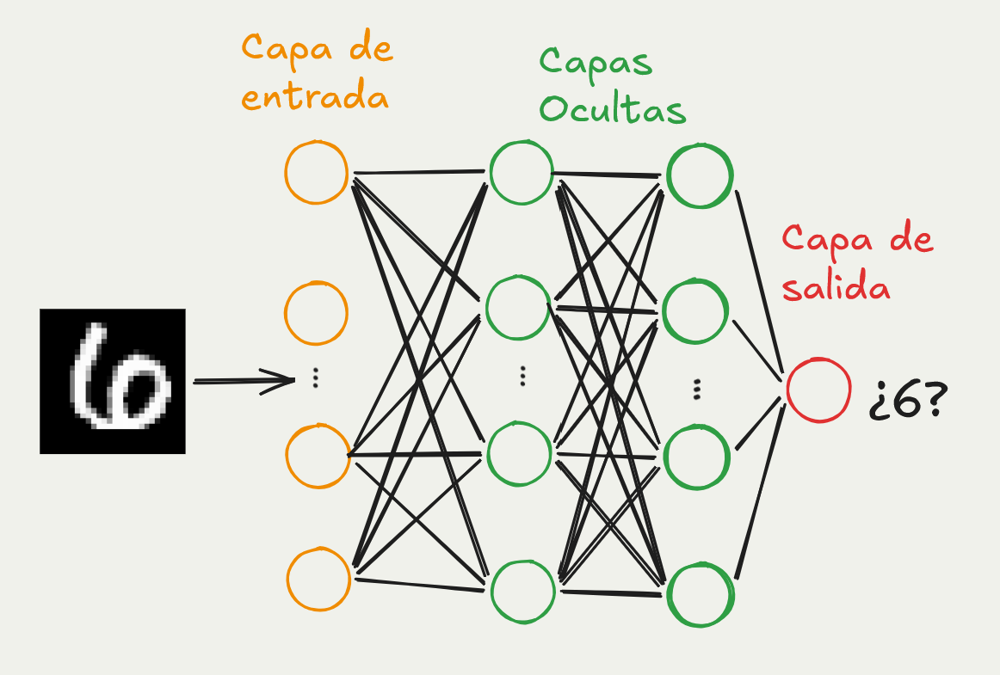
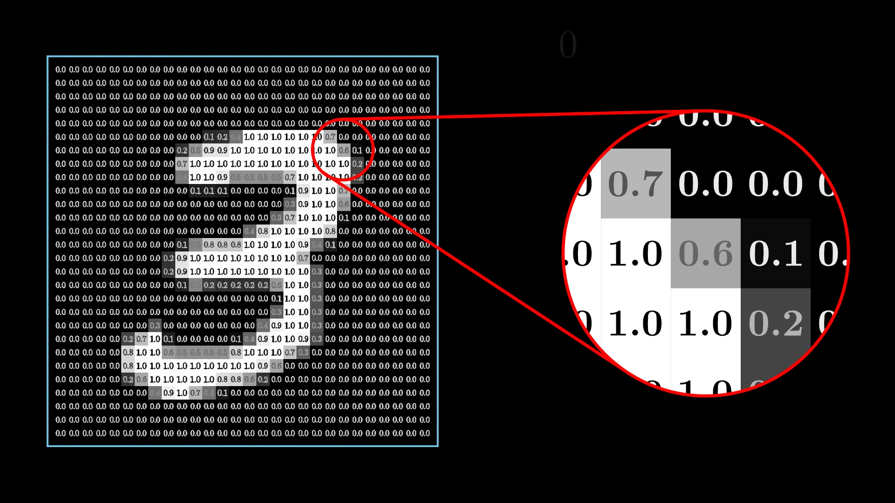
Crédito: 3Blue1Brown
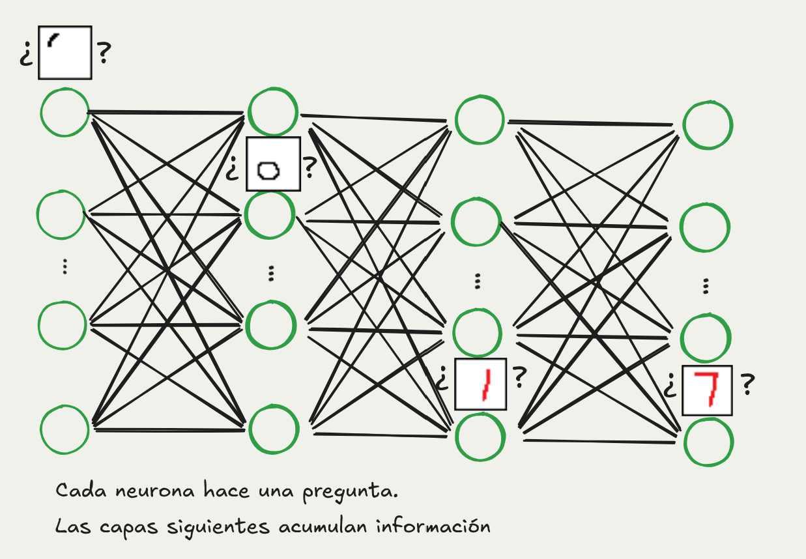
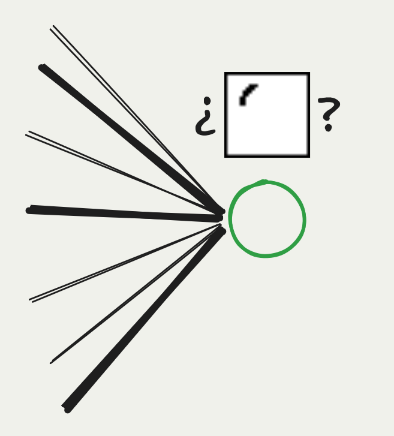
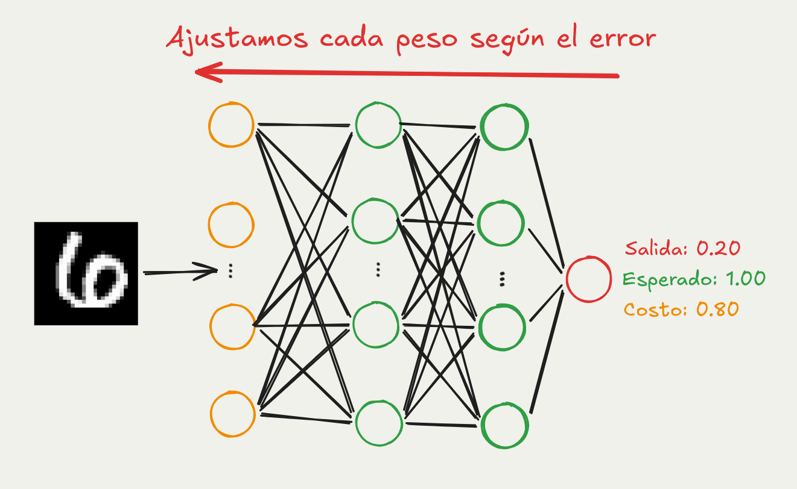
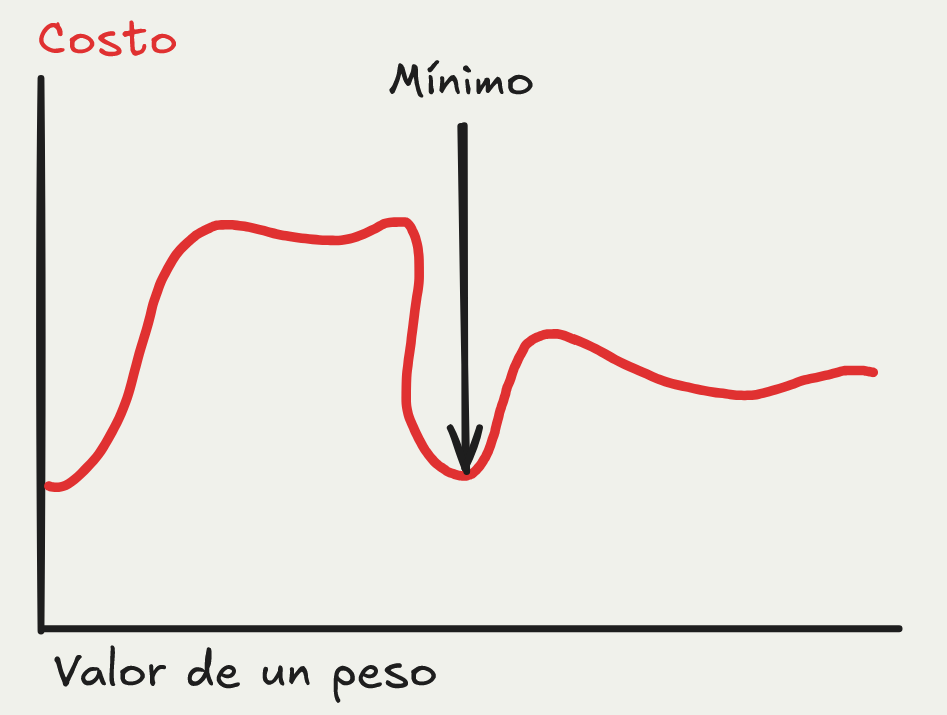
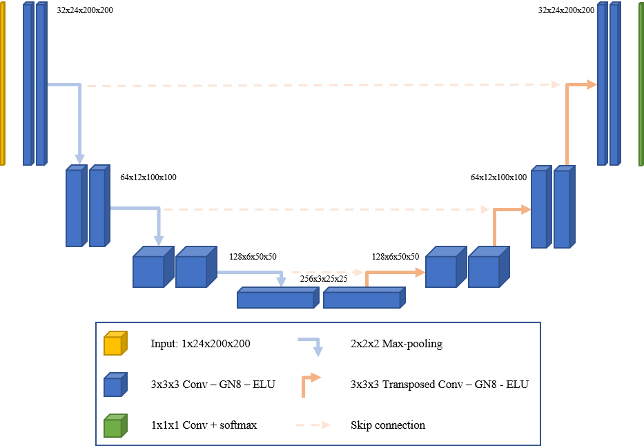
UNET, ejemplo de una red neuronal profunda
Eg: GPT, Gemini, Claude
Texto, imágenes, audio, video, etc.
La siguiente palabra más probable
Un modelo de ML entrenado con grandes cantidades de texto para predecir la siguiente palabra más probable en una secuencia.
Técnicamente, una LLM le asigna una probabilidad a cada palabra en su vocabulario dado un contexto de palabras anteriores.
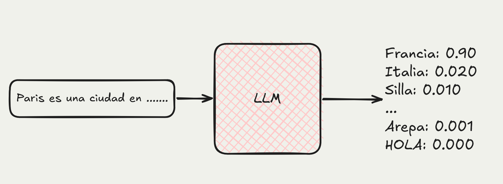
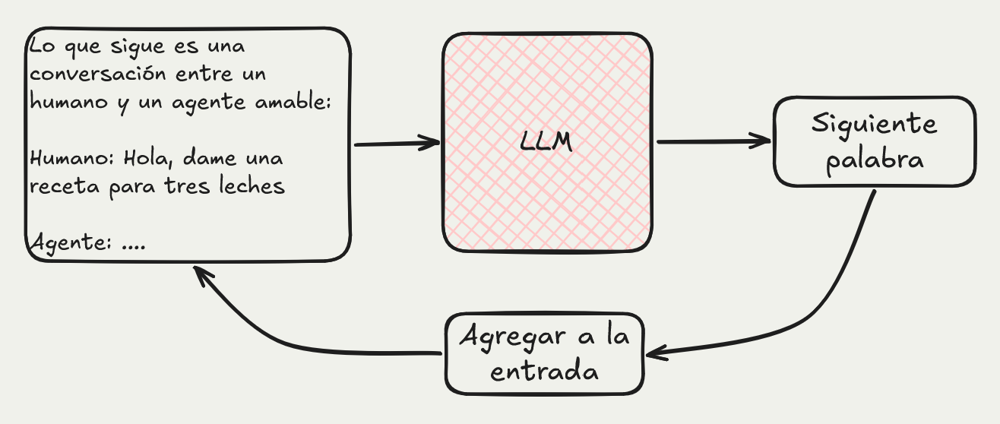
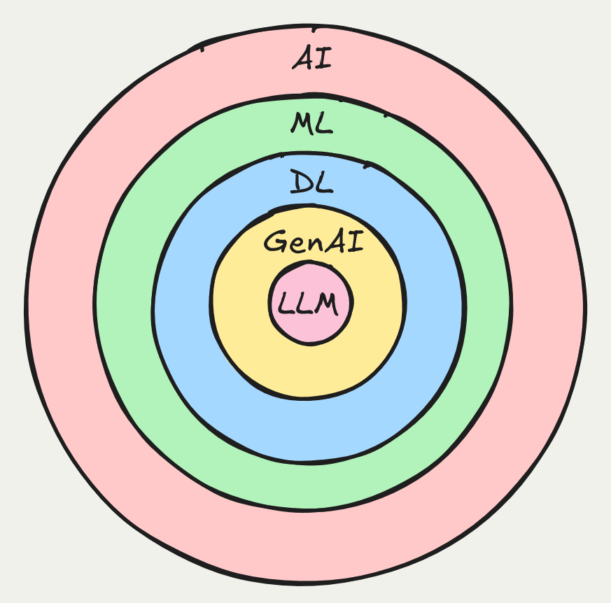